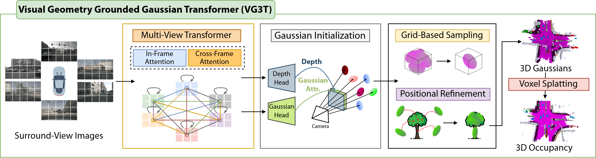
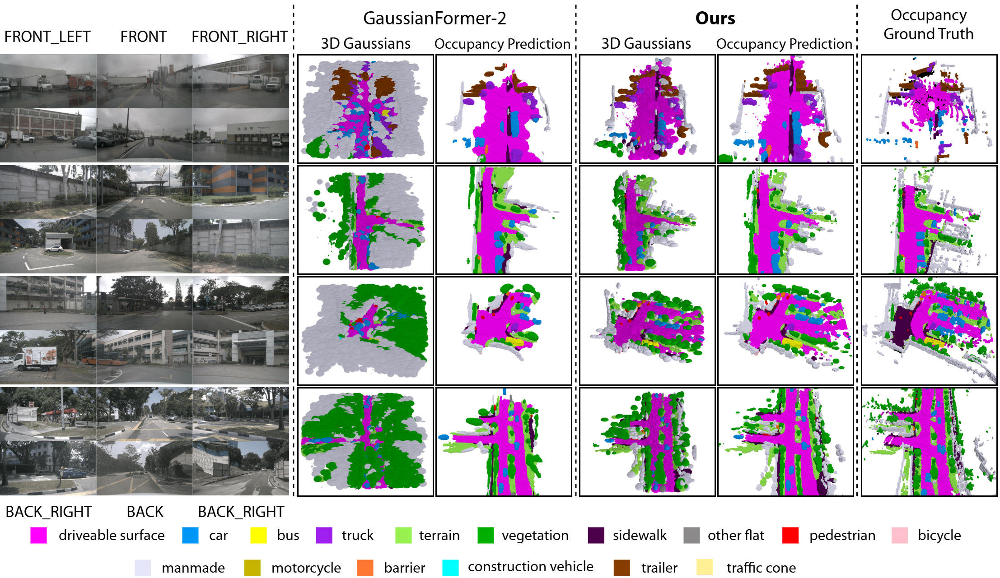

Generating a coherent 3D scene representation from multi-view images is a fundamental yet challenging task. Existing methods often struggle with multi-view fusion, leading to fragmented 3D representations and sub-optimal performance.
To address this, we introduce VG3T, a novel multi-view feed-forward network that predicts a 3D semantic occupancy via a 3D Gaussian representation. Unlike prior methods that infer Gaussians from single-view images, our model directly predicts a set of semantically attributed Gaussians in a joint, multi-view fashion. This novel approach overcomes the fragmentation and inconsistency inherent in view-by-view processing, offering a unified paradigm to represent both geometry and semantics. We also introduce two key components, Grid-Based Sampling and Positional Refinement, to mitigate the distance-dependent density bias common in pixel-aligned Gaussian initialization methods.
Our VG3T shows a notable 1.7%p improvement in mIoU while using 46% fewer primitives than the previous state-of-the-art on the nuScenes benchmark, highlighting its superior efficiency and performance.
VG3T processes multi-view images jointly using a VGGT backbone. All camera views are fused early through alternating in-frame and cross-frame attention to build a geometrically consistent feature representation.
From these features, the network directly predicts a set of 3D Gaussians with geometry and semantic attributes. To improve efficiency and spatial coverage, redundant Gaussians are removed using grid-based sampling, and the remaining ones are refined with a positional refinement module before being rendered into a 3D semantic occupancy.

Compared to prior methods that initialize Gaussians from single views, VG3T produces cleaner and more coherent 3D reconstructions. Early multi-view fusion reduces fragmented geometry and artifacts, while multi-view initialization concentrates Gaussians on occupied regions.
As a result, VG3T captures scene structure and small objects more accurately with fewer primitives.

@article{kim2025vg3tvisualgeometrygrounded,
author = {Junho Kim and Seongwon Lee},
title = {VG3T: Visual Geometry Grounded Gaussian Transformer},
journal = {IEEE International Conference on Robotics and Automation (ICRA)},
year = {2026},
}